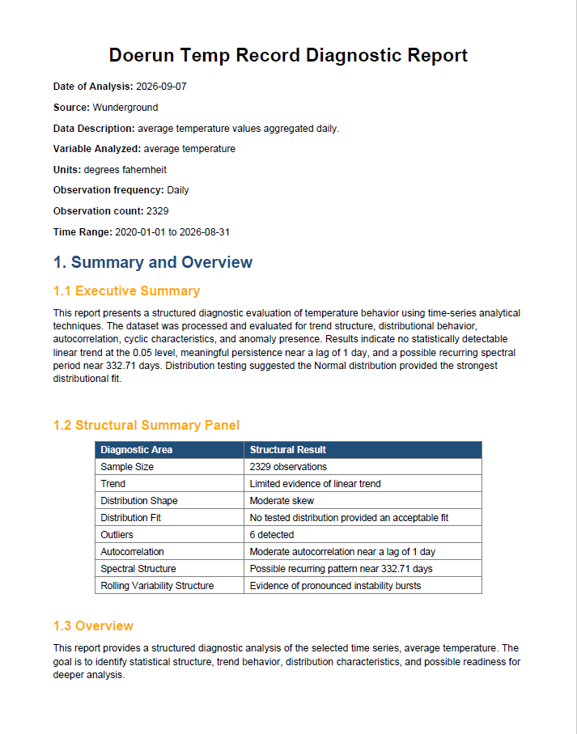

Welcome! This site contains some of my projects in data analysis, mathematics, and time-series analysis.

A Python-based analysis tool designed to provide a clear, plain-language overview of time-series data using descriptive statistics, distributions, trend analysis, and cyclicity measures.
View Sample ReportPython • pandas • SciPy • Matplotlib
Status: Ongoing development
About information will go here.